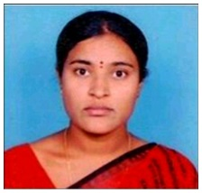

Mrs.Ch.Ratnakala
Lecturer
Department of Botony
MJPTBCW RESIDENTIAL DEGREE COLLEGE FOR WOMEN
Teaching
Mrs. CH. Ratnakala She Holds Master's degree in Botany and Bachelor of Education from Osmania University.
She has five years of teaching experience.
She has attended National seminars.